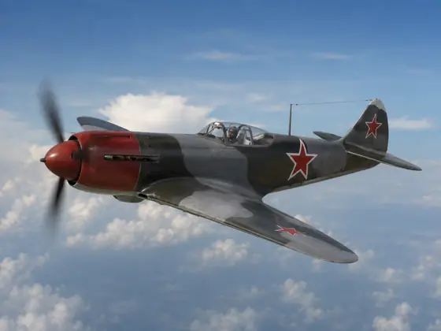

La-5 operations · 1942–1945
The La-5 was a vital Soviet fighter that gave VVS pilots better low-to-medium altitude performance against the Bf 109 and Fw 190. It fought at Stalingrad, Kuban, Kursk, Leningrad and across the Eastern Front, with the La-5FN becoming the most capable route for many modellers. A good La-5 build starts with the variant and campaign: early La-5, improved La-5F, La-5FN, Guards regiment subject, winter whitewash aircraft or survivor/reference route.

Role & strengths
- Soviet radial-engine fighter used from Stalingrad to the late Eastern Front
- Stalingrad, Kuban, Kursk, Leningrad, Guards regiment and winter whitewash routes
- ASh-82 radial cowling, heavy exhaust staining, red stars and frontline field wear
- AMT-4 green / AMT-6 black over AMT-7 blue, later grey-grey schemes and winter whitewash
- Oil staining, dust, chipped wing roots, worn walkways and rough airfield grime
Key theatres
- Stalingrad and winter La-5 route
- Kuban air battles and Guards fighter regiments
- Kursk and 1943 Eastern Front routes
- Late La-5FN and survivor-reference routes
Specification La-5FN
Survivor/reference today
La-5 references rely heavily on period photos and surviving/restored aircraft. Use them for cowling, canopy, cockpit and landing gear, but verify wartime colours and regiment markings separately.
View referencesTimeline highlights
Build this La-5 as…
Pick variant and campaign first. Early La-5, La-5F, La-5FN, Guards regiment, winter whitewash and survivor routes all need different details.
Aircraft identity
Early La-5, La-5F and La-5FN differ in canopy, cowling, intake and detail fit. Match the kit to the subject.
VVS green/black and later grey-grey schemes are date dependent. Do not mix late La-7-style grey schemes with early Stalingrad aircraft.
Paint scheme cards
Core early La-5 route with red stars and rough field wear.
Later route with toned grey camouflage and Guards markings.
Winter route with worn whitewash, exhaust streaks and muddy/snowy fields.
Weather cowling, exhaust outlets, wing roots, belly and tyres separately.
Campaign cards
Early La-5 route with urgent frontline conditions and winter/weathering options.
Air battle route with Guards regiments, red stars and high sortie wear.
La-5F/FN route with improved performance and intense summer field grime.
Whitewash route with streaking, exposed camouflage and muddy/snowy airfields.
Build difficulty and related guides
Medium. Strong shapes, but variant details and cowling fit need attention.
Medium-high. La-5, La-5F and La-5FN details should not be mixed.
High. Oil, exhaust, winter whitewash and field wear need layered restraint.
Lavochkin La-5 VVS fighter regiments
Sortable La-5 cards covering Stalingrad, Kuban, Kursk, Leningrad, winter VVS and survivor/reference routes.
La-5 operating map
Airfield info
Click a marker to show linked La-5 unit cards and modelling notes.
Campaign timeline
Survivors
Books and reference sources
La-5 build guide
La-5 videos, photos and archive material
Media replaces the old separate walkaround tab: cockpit, exhaust, undercarriage, markings, survivor references, archive imagery and video cards are grouped here.